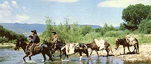
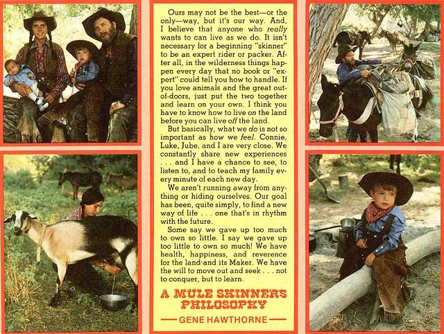

You can "get away from it all"... here's a family that did!
Our mules-and the contents of the packs they carry-are our family's only "worldly goods". And we live this way because we choose to . . . not because we must.
My husband Gene and I met in the autumn of 1974, while we were both employed at Grand Canyon National Park. He guided mule trips to Phantom Ranch . . . while I worked in the curio shop. Our shared love for riding and packing soon drew us together, and we were married in January 1975. For our honeymoon, we took a 700-mile horseback journey through the wilds of Arizona.
That adventure helped us to decide upon the type of lifestyle we wanted for ourselves. So-when Gene and I returned from the trip-we sold what few goods we owned . . . and bought five mules and a goat. Since that day the Arizona wilderness has been our only home.
We ride two of the mules and pack the other three. Our "string" of beasts allows us to carry enough supplies to stay in the back country for two or three months at a time. Mules were the logical choice for our purposes, because they're stronger and more sure-footed than horses . . . and they have more stamina. The stubborn critters can go for two to three days, if necessary, without water. And they don't need to be shod.
It's our practice to get an early start on "riding days" and travel until we find an appealing camp-with water, grazing areas, and firewood-for the night. If we come across an especially nice spot, we may enjoy it for a few days (in order to give the mules, and ourselves, a rest) before moving on to the next site. You see . . . it really doesn't matter whether we travel 5 or 25 miles-or simply spend our time around a camp-because each day is enjoyed for itself.
For the most part, we try to stay in wilderness areas that have no roads and no human dwellings . . . where the only possible way for us to get around is to hike or ride. (This is quite easy in Arizona, since only a small percentage of the state is privately owned . . . the majority being national forests and reservations.) It's not at all unusual for us to go for weeks-or even months-at a time without seeing another soul!
We carry only as much equipment as we need: two Dutch ovens (one of 10 inches and another of 12 inches in diameter), a small tent, our bedrolls, a change of clothing, a large steel pot that's used to heat water, mending equipment for our saddles and pack bags, and enough food to last for eight to twelve weeks.
Our diet is generally made up of beans, rolled oats, brown rice, potatoes, eggs, honey, raisins, cheese, peanut butter, alfalfa sprouts, wheat, and corn. (We have a grinder which we use to make flour and cornmeal.)
For breakfast, we have rolled oats, or eggs and biscuits, or pancakes. Lunch consists of leftover biscuits or pancakes, or dried fruit and cheese, or peanut butter sandwiches, while our evening meal is usually beans with rice or potatoes. These are our basic foods, but we also catch fish when were near a river or stream and find wild berries and plants from time to time-in order to supplement our rations.
Our wardrobe is a practical one, too. Each of us has western riding boots (plus camp boots for walking and exploring), two pairs of bluejeans, two shirts, a hat, a vest, and leather chaps. The latter protect us from the heat in the summer, the cold in the winter, and injury from the heavy brush we often ride through.
In February 1976 we had our first child, Luke Kade. He was born in a tent at the mouth of the Sycamore Canyon wilderness area . . . and was delivered by a midwife with Gene's assistance.
Our second son, Jube Wade, was born on April 26, 1978. We made camp at the foothills of the Mingus Mountains near the old ghost town of Jerome to await his arrival. And we didn't have to wait long . . . I was in labor for two hours with Luke, but Jube arrived in 20 minutes! We broke camp when he was 12 days old.
Luke is very proud of his little brother. He held my hand during the birth and has really helped me take care of Jube. In fact, both children are very contented and happy. Luke who has been on muleback since he was 10 days old-has already traveled about 3,000 miles . . . and was riding alone (though strapped to the mule) when he was only 11 months old. Jube rode about 50 miles within the first month after his birth rocked in a sling that I strapped to the front of my body.
We hope our offspring will learn self-sufficiency from their outdoor lifestyle. Luke already has a good sense of direction, which we've fostered by leading him from the camp and letting him find his own way back (under our hidden but watchful eyes, of course). He can also start a fire, make his own biscuits and cook them on a stick . . . and he's learning to milk Heidi, the goat (who provides more than enough milk for the children to drink).
Besides Heidi, Luke's other pet is his dog. Blue . . . an Australian shepherd puppy he was given Christmas before last. And, of course, we're all great friends with our mules: Molly, Stubby. Mickey, Minnie, and Frances.
People ask us if we ever get lonely. We don't, of course . . . in fact, it's so beautiful in "our" wilderness that we dread trips into town to get supplies. We simply enjoy each other, our animals, and the beauty of nature.
We do carry a gun, but only use it to protect ourselves . . . mostly from rabid animals. When you live out in the wilderness as we do, everything soon becomes as one . . . and to do thoughtless harm to any creature would be to hurt ourselves. We just like to look at the wild beasts and birds with whom we share this land and-as we might be the first humans they've ever seen-the animals often come close to stare at us.
Many folks also wonder whether we get bored without access to TV, radio, and newspapers . . . or how we earn money and handle illnesses.
Boredom has never been a problem for us, simply because we always have plenty to do. I-for instance-take care of the children, wash our clothes by hand, milk the goat, and so forth. Even our cooking takes a good deal of time . . . because every meal is made "from scratch". (But at least I don't have to worry about spilling food on my carpet!)
Gene gathers wood, watches that the hobbled mules don't wander off while they graze, keeps the equipment mended, fishes, and spends time with the boys.
Luke manages to keep quite busy, too. He helps both his father and me, swims when were near water, or just plays around the camp. Since we own no store-bought toys, our eldest uses his lively imagination to make up his own games.
And no . . . we don't miss the mass media. The outdoors is our television, and the birds, the wind, and the rivers are our music. We'd rather not know about the crime and injustice that go on in the "civilized" rat race.
As for money, we don't need a lot . . . just enough to purchase our food supplies and a few odds and ends. Our "grubstake" the money we accumulated by selling our truck and other oddments before we began this new life-left us with some small savings . . . and my husband does ranch work when necessary.
Our family hasn't had to deal with a single illness since we took to the woods. However-if sickness ever did strike-we take care of the problem as best we could until we could get to a doctor.
Gene hasn't had a driver's license for five years, and mine is about to expire. I doubt if I'll renew it, though . . . you don't need a license to drive a mule yet.
So many people tell us they wish they were young enough to do what we're doing. Well, I'll be 30 in another year, and Gene will be 47 in November. But we're going to stay in our wilderness until were too old to ride . . . and that may be never! After all, we have a complete life . . . each one of us is happy with the others and with our surroundings!
|
 PHOTOS BY JOHN LOWERY |
 |
|